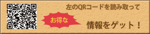

大阪でラーメン食べるならことこと屋


各店舗の最新情報
- 2015・06・01
関西全店舗 - 6月1日〜関西全店舗で夏季限定「もち豚 冷しゃぶ冷麺」登場！
- 2015・9月中旬
新規店舗 - 大阪府岸和田市に出店が決定しました。
- 2015・6月中旬
新規店舗 - 大阪府大東市に出店が決定しました。
イベント情報
- 2015・03・29
ラーメンショー - 5月1日〜5月6日に福島県ラーメンイベント初出場！
http://www.fct.co.jp/event/ra-men/
- 2015・02・15
ラーメンショー - 3月11日〜3月16日に「大分駅前ラーメン博2015」出店決定！
http://www.tostv.jp/ramen/
- 2015・01・25
西梅田 - 3月13日〜3月15日に大阪西梅田で出店させていただきます！
http://ramen-sengoku.net


- 